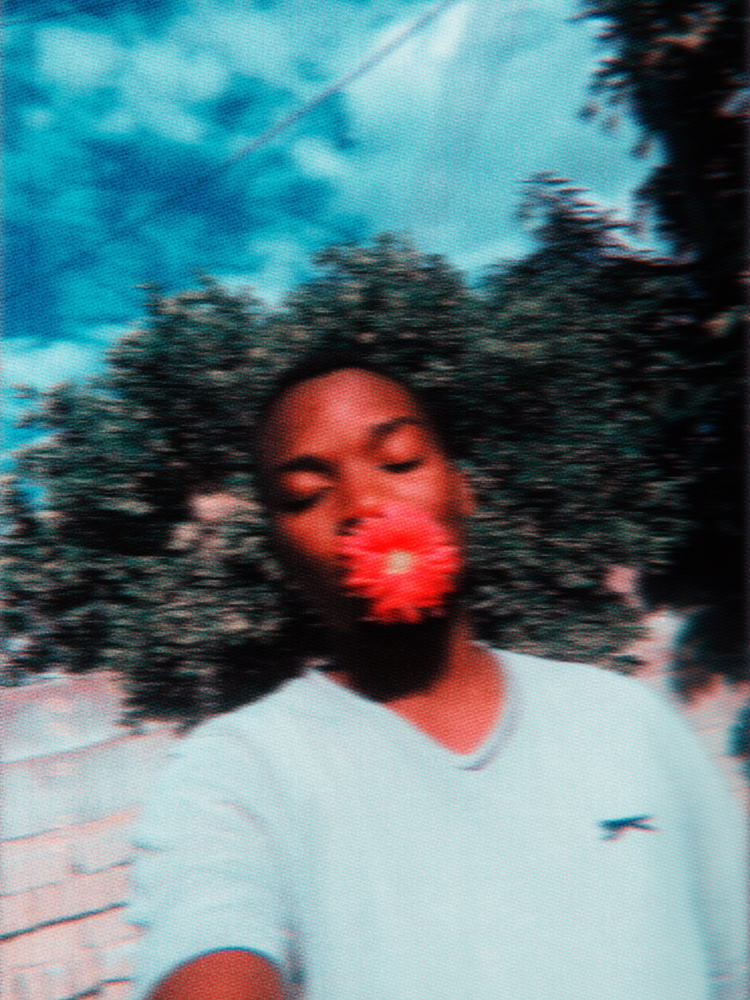

Takudzwanashe Michael Mhuru is a writer from Masvingo, Zimbabwe. He writes by interpreting random pictures that he finds on the internet, and spinning stories from his childhood in a Zimbabwean ghetto, a genre self-titled photo-poetry. His favorite authors are Dambudzo Marechera and Chimamanda Ngozie Adichie; he loves writing with Mbira music in the background. Takudzwanashe writes for fun, and has a 100 page manuscript waiting for a publisher to pick up. Learn more about Taku @his professional website